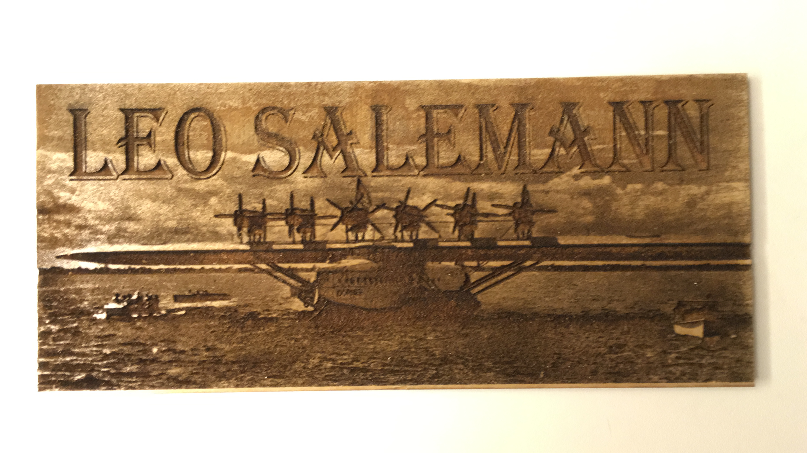
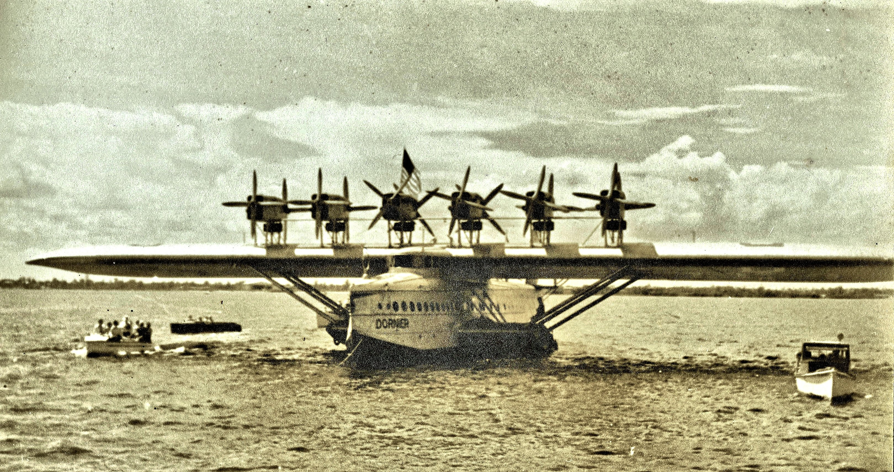
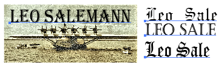

Here is all the documentation for assignment 0!
Make a name plat using any fabircation tehnique and material.
I spent last Saturday (April 6, 2019) at the UW Maker summit. There was lasercutting workshop at the MILL, so I used that as an opportunity to do my homework.
One of my pastimes is browsing aircraft photos on r/WierdWings on reddit. If found an image of a Dorinier DoX from 1931. It's a seaplane that literally looks like a "flying boat." The image itself is a sepia toned, perhaps a daguerreotype, so I thought it would look good burned in wood. The top half of the image is mostly empty sky, so if I filled the space with my name in all caps, I'd have a good Nameboard. 
Dornier Do X in Florida on trip from Germany to NYC - 1931 from r/WeirdWings
It took awhile to find a font that worked well with the image. I wanted something with blocky, with some "Olde English flair", but still legible. It also had to be mostly solid -- providing good contrast and readability at a distance. After looking at Castellar, Old English Text MT, GothicE, and Algerian, I went with Algerian.
Thank goodness I attended the lasercutting workshop at the MILL. I was able to check out a Macbook pro with all the software I needed. The staffers got me familiar with Adobe Illustrator and their lasercutters. There were several print dialogues with a lot of parameters to get familiar with.
If I had the presense of mind to grab some screen shots of the print dialogues I would have displayed them right here. :/
The staffers also showed me the lasercutter joystick/button interface, so I could adjust the home position, do dry runs, turn on the visible red laser, etc.
Yup, should have snagged a photo of the Laser printer control panel. It would have looked great here. :/
I was able to get a reasonable print on the first try, although it came out with more contrast than I expected, and required a second pass to cut it out. The second pass surprised me, as I inlucded a vector rectangle outlining my image. Something about those printer settings, I guess. A bit of cleaning and sanding lightened up the sky, helping my name to "pop" more.
This is where I would have includes pics or gifs of the lasercutting process ... if I had taken any. :/
A lot darker than the original image, but at least it worked. Pretty happy with the way the font turned out. I had printed the other fonts onto wood, too; but outside the image boundary.
Got a passable print on the first try.